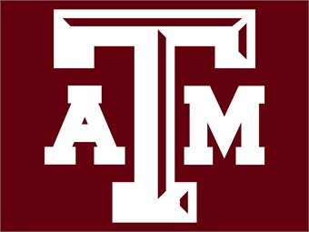

Education
Throughout my elementary schools, I attended a total of three schools, Within the same district. Moving from Yeager to Moore and lastly to Matzke elementary. Journeying to Jr high, I attended Bleyl middle school for about two and a half school years and ending the second semester of my final year in Jr High at a Nolan Ryan. Moving up to high school was a very positive and great experience for me. During my freshman year at Shadow Creek, I took the four main core classes (world geography, English 1, algebra 1, and biology) as well three electives such as Spanish 2, Intro to Engineering, and finally Art 1. Finishing the freshman year at Shadow Creek HS, I managed to run through about two months of my sophomore year at the same school. After the final two months, we moved to the Pasadena district within Texas. Overall, my experiences at this new school were decent. AS of my sophomore year, I'm taking Pre-ap Geometry, English 1, IPC, (integrated physics and chemistry) World history, PE, Pre-ap Spanish 3, and lastly Interior Design and Architecture. Although I have exchanged schools a handful of times, I will say that my experiences and passions have changed a bit over my journey. From the desire to become an engineer, I have also opened up to other possibilities that I'm interested in as a Software engineer as well as a web developer etc. As I leave High school, a couple universities that im interested in joining are Texas Tech, Rice university, Texas A&M or the University of Houston.
